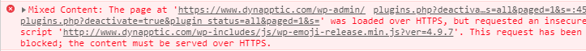

Switching Your Website to Use HTTPS, the Free and Easy Way
Google has announced that with their July 2018 release of Chrome 68 they’ll start marking all non-HTTPS websites as “not secure.” Thankfully, these days there are several cheap, and even free, options for securing your site’s traffic. There’s really no reason not to do it.
One such option is to use CloudFlare’s free SSL. Security expert Troy Hunt has a fantastic 4-part video series called Https Is Easy! that takes you through the simple steps to secure your site.
Fixing Mixed Content Issues on WordPress Sites
While I was able to get a couple of my websites switched to HTTPS with no issues in a matter of minutes, I ran into issues with one of my Azure-hosted WordPress sites. Much of the site’s functionality broke in the switch and I was now getting a host of mixed content errors, particularly with plugins that I was using, like the following:

The fix for this is simple: install the SSL Insecure Content Fixer plugin.

Once installed, open the Settings for the plugin. I was able to leave all of the settings at their default except for HTTPS detection. Change this setting to use HTTP_X_FORWARDED_PROTO (e.g. load balancer, reverse proxy, NginX), as this is the header that CloudFlare uses.

After applying this change, my mixed content errors went away, my site was secured, and I was good to go.